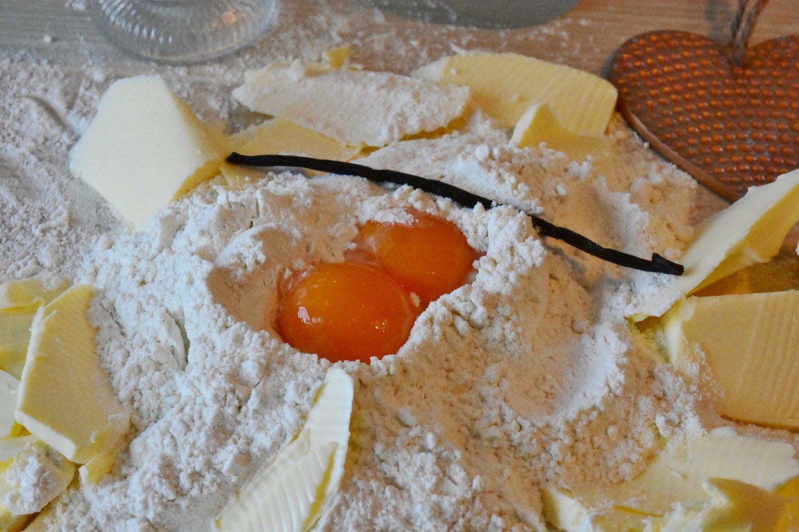

¿Que usamos?
INGREDIENTES NATURALES
Extracto natural de Vainilla, Sal Marina, Chocolate Belga con chaucha natural de Vainilla, Cacao de Costa de Marfil, Agua filtrada por ósmosis inversa de 7 pasos, Harina de Lupino Agroecológica, Harina de Teff Agroecológica, Harina de Sorgo Blanco Agroecológica, Harina de Mijo Agroecológica, Harina de Trigo Sarraceno Agroecológica
INGREDIENTES ORGÁNICOS CERTIFICADOS
Miel, Harina 000, Harina de Centeno Integral, Harina de Trigo Integral, Harina de Espelta, Azúcar, Azúcar de Mascabo, Mermeladas, Huevos, Queso Parmesano, Aceite de Girasol Alto Oleico Virgen, Avena
